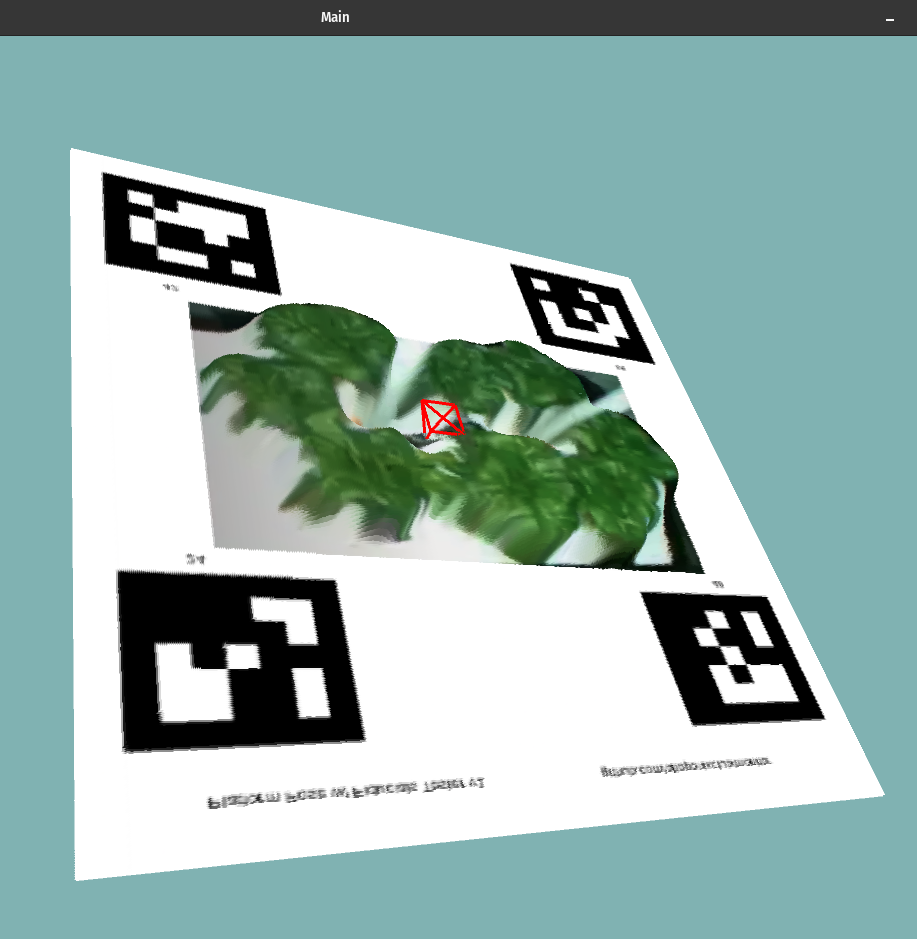

Aside from the automation software for S2 that includes
subcomponents like control theory and microcontrollers,
data monitoring has been another of our key software focuses.
Via our large onboard sensor suite and the utilization of
various computer vision and machine learning algorithms
for tasks like stereo 3D mapping, foliage segmentation,
disease detection, and foliage prediction, we can
isolate what parameters best optimize for growth speed.
We built a web app that allows us to continuously livestream
the state of the system.
Our robot code is written in CPP, soon to be switched to the ROS2 framework.
Check out some of our software here:
github.com/altoponixclub

Visualization of 3d pointcloud of plant growing platform obtained with stereo vision